Contents
- Separate channels
- Time vectors
- 1) Raw visualization for each file
- 2) Preprocess all signals before analysis
- 2) filtered visualization for each file
- 3) detecting R peaks
- 4) visualize pan tompins outputs
- 5) segment diastole and systole
- 5) Plot a few systolic and diastolic beats for each file
- 6) AR modeling
- 7) comparison between subjects (AR(5) method
- 8) comparison between subjects welch method
- functions
clc; clear; close all; Fs = 1000; files = {'Data 1.dat.txt','Data 2.dat.txt','Data 3.dat.txt'}; allData = cell(3,1); for k = 1:3 X = readmatrix(files{k}); if size(X,2) ~= 3 error('File %s must have 3 columns: PCG, ECG, carotid.', files{k}); end allData{k} = X; end
Separate channels
pcg1 = allData{1}(:,1); ecg1 = allData{1}(:,2); car1 = allData{1}(:,3);
pcg2 = allData{2}(:,1); ecg2 = allData{2}(:,2); car2 = allData{2}(:,3);
pcg3 = allData{3}(:,1); ecg3 = allData{3}(:,2); car3 = allData{3}(:,3);
Time vectors
t1 = (0:length(pcg1)-1)/Fs; t2 = (0:length(pcg2)-1)/Fs; t3 = (0:length(pcg3)-1)/Fs;
1) Raw visualization for each file
figure('Color','w','Name','File 1'); subplot(3,1,1); plot(t1,pcg1); grid on; title('File 1 - PCG'); xlabel('time (s)'); ylabel('Amplitude'); subplot(3,1,2); plot(t1,ecg1); grid on; title('File 1 - ECG'); xlabel('time (s)'); ylabel('Amplitude'); subplot(3,1,3); plot(t1,car1); grid on; title('File 1 - Carotid'); xlabel('time (s)'); ylabel('Amplitude'); figure('Color','w','Name','File 2'); subplot(3,1,1); plot(t2,pcg2); grid on; title('File 2 - PCG'); xlabel('time (s)'); ylabel('Amplitude'); subplot(3,1,2); plot(t2,ecg2); grid on; title('File 2 - ECG'); xlabel('time (s)'); ylabel('Amplitude'); subplot(3,1,3); plot(t2,car2); grid on; title('File 2 - Carotid'); xlabel('time (s)'); ylabel('Amplitude'); figure('Color','w','Name','File 3'); subplot(3,1,1); plot(t3,pcg3); grid on; title('File 3 - PCG'); xlabel('time (s)'); ylabel('Amplitude'); subplot(3,1,2); plot(t3,ecg3); grid on; title('File 3 - ECG'); xlabel('time (s)'); ylabel('Amplitude'); subplot(3,1,3); plot(t3,car3); grid on; title('File 3 - Carotid'); xlabel('time (s)'); ylabel('Amplitude');
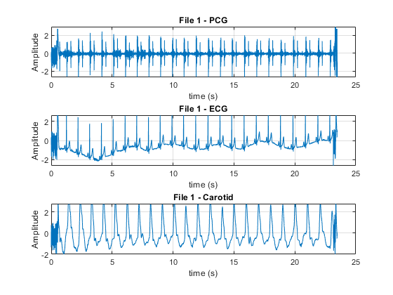
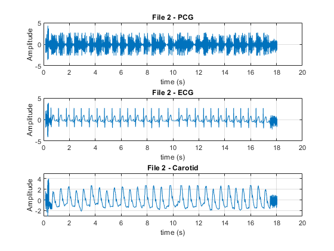
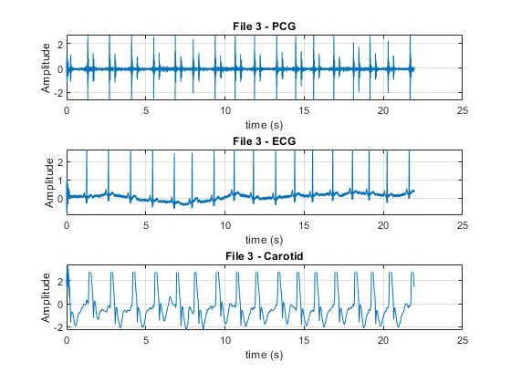
2) Preprocess all signals before analysis
ecg1_f = preprocess_signal(ecg1, Fs, 'ecg'); pcg1_f = preprocess_signal(pcg1, Fs, 'pcg'); car1_f = preprocess_signal(car1, Fs, 'carotid'); ecg2_f = preprocess_signal(ecg2, Fs, 'ecg'); pcg2_f = preprocess_signal(pcg2, Fs, 'pcg'); car2_f = preprocess_signal(car2, Fs, 'carotid'); ecg3_f = preprocess_signal(ecg3, Fs, 'ecg'); pcg3_f = preprocess_signal(pcg3, Fs, 'pcg'); car3_f = preprocess_signal(car3, Fs, 'carotid');
2) filtered visualization for each file
figure('Color','w','Name','File 1'); subplot(3,1,1); plot(t1,pcg1_f); grid on; title('File 1 - PCG'); xlabel('time (s)'); ylabel('Amplitude'); subplot(3,1,2); plot(t1,ecg1_f); grid on; title('File 1 - ECG'); xlabel('time (s)'); ylabel('Amplitude'); subplot(3,1,3); plot(t1,car1_f); grid on; title('File 1 - Carotid'); xlabel('time (s)'); ylabel('Amplitude'); figure('Color','w','Name','File 2'); subplot(3,1,1); plot(t2,pcg2_f); grid on; title('File 2 - PCG'); xlabel('time (s)'); ylabel('Amplitude'); subplot(3,1,2); plot(t2,ecg2_f); grid on; title('File 2 - ECG'); xlabel('time (s)'); ylabel('Amplitude'); subplot(3,1,3); plot(t2,car2_f); grid on; title('File 2 - Carotid'); xlabel('time (s)'); ylabel('Amplitude'); figure('Color','w','Name','File 3'); subplot(3,1,1); plot(t3,pcg3_f); grid on; title('File 3 - PCG'); xlabel('time (s)'); ylabel('Amplitude'); subplot(3,1,2); plot(t3,ecg3_f); grid on; title('File 3 - ECG'); xlabel('time (s)'); ylabel('Amplitude'); subplot(3,1,3); plot(t3,car3_f); grid on; title('File 3 - Carotid'); xlabel('time (s)'); ylabel('Amplitude');
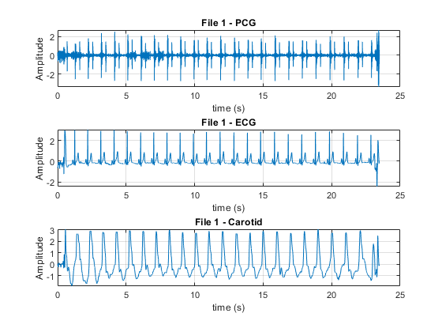
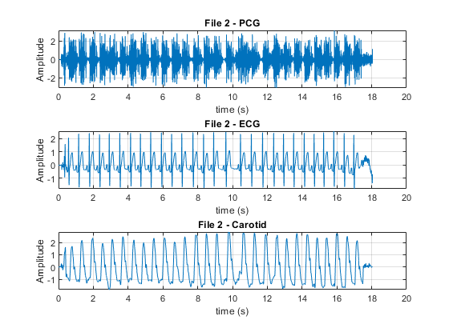
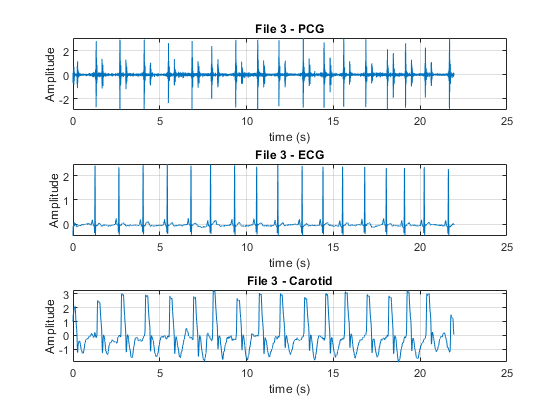
3) detecting R peaks
out_pan_tomp1 = pan_tomp(ecg1_f, Fs, 1, 'ECG 1'); out_pan_tomp2 = pan_tomp(ecg2_f, Fs, 1, 'ECG 2'); out_pan_tomp3 = pan_tomp(ecg3_f, Fs, 1, 'ECG 3');
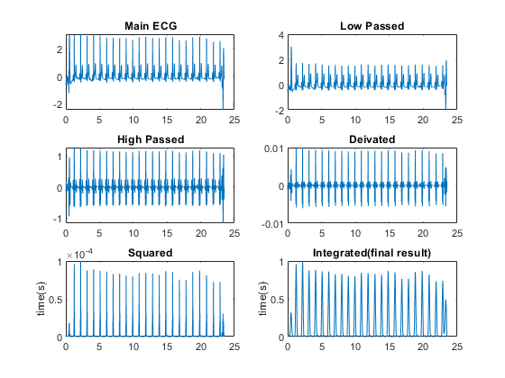
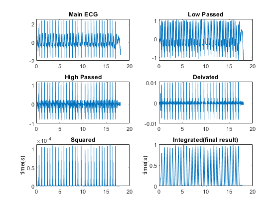
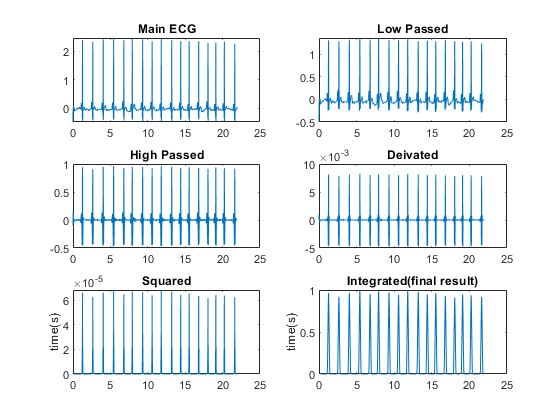
4) visualize pan tompins outputs
visualize_pan_tomp(ecg1_f, Fs, out_pan_tomp1, t1, "ECG 1") visualize_pan_tomp(ecg2_f, Fs, out_pan_tomp2, t2, "ECG 2") visualize_pan_tomp(ecg3_f, Fs, out_pan_tomp3, t3, "ECG 3")
Number of detected R-peaks: 23 Average Heart Rate: 58.8 bpm Number of detected R-peaks: 28 Average Heart Rate: 93.1 bpm Number of detected R-peaks: 17 Average Heart Rate: 46.5 bpm
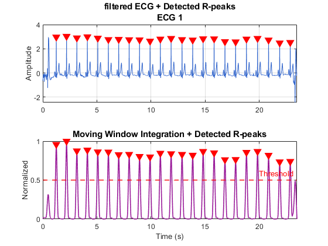
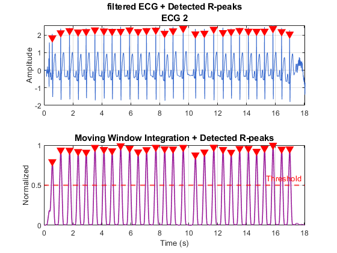
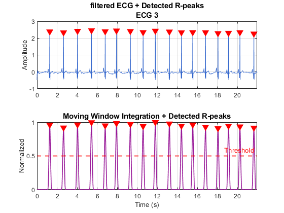
5) segment diastole and systole
% R-peaks from Pan-Tompkins output threshold = 0.5; min_rr_samples = round(0.4 * Fs); [~, r1] = findpeaks(out_pan_tomp1, 'MinPeakHeight', threshold, 'MinPeakDistance', min_rr_samples); [~, r2] = findpeaks(out_pan_tomp2, 'MinPeakHeight', threshold, 'MinPeakDistance', min_rr_samples); [~, r3] = findpeaks(out_pan_tomp3, 'MinPeakHeight', threshold, 'MinPeakDistance', min_rr_samples); % choose systole fraction of each RR interval sysFrac = 0.35; % Data 1 [ECG_sys_1, ECG_dia_1] = split_rr_segments(ecg1_f, r1, sysFrac); [PCG_sys_1, PCG_dia_1] = split_rr_segments(pcg1_f, r1, sysFrac); [CAR_sys_1, CAR_dia_1] = split_rr_segments(car1_f, r1, sysFrac); % Data 2 [ECG_sys_2, ECG_dia_2] = split_rr_segments(ecg2_f, r2, sysFrac); [PCG_sys_2, PCG_dia_2] = split_rr_segments(pcg2_f, r2, sysFrac); [CAR_sys_2, CAR_dia_2] = split_rr_segments(car2_f, r2, sysFrac); % Data 3 [ECG_sys_3, ECG_dia_3] = split_rr_segments(ecg3_f, r3, sysFrac); [PCG_sys_3, PCG_dia_3] = split_rr_segments(pcg3_f, r3, sysFrac); [CAR_sys_3, CAR_dia_3] = split_rr_segments(car3_f, r3, sysFrac);
5) Plot a few systolic and diastolic beats for each file
nShow = 5; % number of segments to display from each matrix plot_compare_sets(ECG_sys_1, ECG_dia_1, ECG_sys_2, ECG_dia_2, ECG_sys_3, ECG_dia_3, 'ECG', Fs, nShow); plot_compare_sets(PCG_sys_1, PCG_dia_1 , PCG_sys_2, PCG_dia_2 , PCG_sys_3, PCG_dia_3, 'PCG', Fs, nShow); plot_compare_sets(CAR_sys_1, CAR_dia_1, CAR_sys_2, CAR_dia_2, CAR_sys_3, CAR_dia_3, 'Carotid', Fs, nShow);
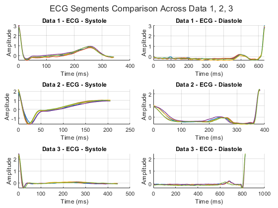
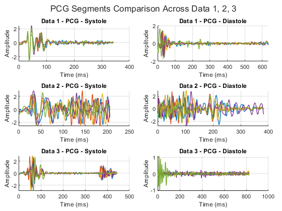
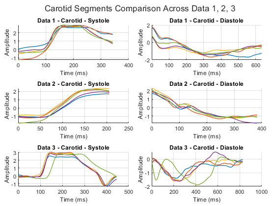
6) AR modeling
maxP = 25; nFFT = 1024; % -------- AIC figures -------- % plot_aic_figure(ECG_sys_1, ECG_dia_1, ECG_sys_2, ECG_dia_2, ECG_sys_3, ECG_dia_3, maxP, 'ECG'); % plot_aic_figure(PCG_sys_1, PCG_dia_1, PCG_sys_2, PCG_dia_2, PCG_sys_3, PCG_dia_3, maxP, 'PCG'); % plot_aic_figure(CAR_sys_1, CAR_dia_1, CAR_sys_2, CAR_dia_2, CAR_sys_3, CAR_dia_3, maxP, 'Carotid'); % % -------- Mean AR-PSD figures -------- plot_mean_ar_psd_figure(ECG_sys_1, ECG_dia_1, ECG_sys_2, ECG_dia_2, ECG_sys_3, ECG_dia_3, Fs, maxP, nFFT, 'ECG'); plot_mean_ar_psd_figure(PCG_sys_1, PCG_dia_1, PCG_sys_2, PCG_dia_2, PCG_sys_3, PCG_dia_3, Fs, maxP, nFFT, 'PCG'); plot_mean_ar_psd_figure(CAR_sys_1, CAR_dia_1, CAR_sys_2, CAR_dia_2, CAR_sys_3, CAR_dia_3, Fs, maxP, nFFT, 'Carotid');
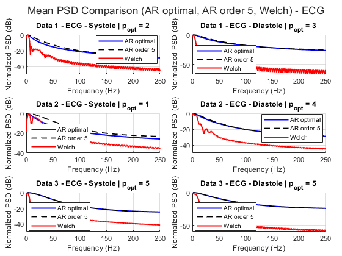
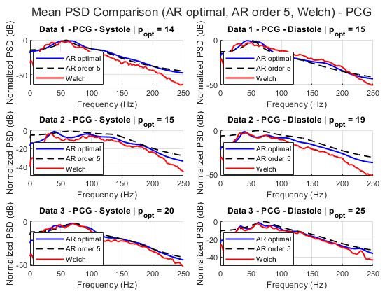
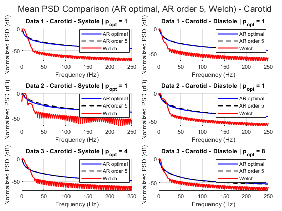
7) comparison between subjects (AR(5) method
plot_ar5_dataset_comparison( ... ECG_sys_1, ECG_dia_1, ECG_sys_2, ECG_dia_2, ECG_sys_3, ECG_dia_3, ... PCG_sys_1, PCG_dia_1, PCG_sys_2, PCG_dia_2, PCG_sys_3, PCG_dia_3, ... CAR_sys_1, CAR_dia_1, CAR_sys_2, CAR_dia_2, CAR_sys_3, CAR_dia_3, ... Fs, nFFT);
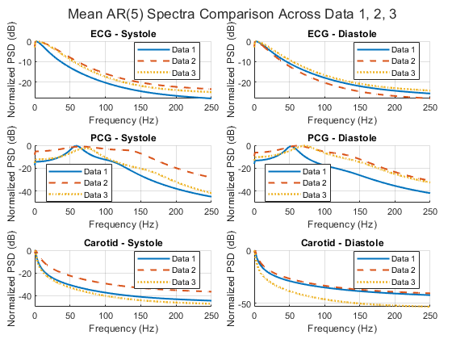
8) comparison between subjects welch method
plot_welch_dataset_comparison( ... ECG_sys_1, ECG_sys_2, ECG_sys_3, ECG_dia_1, ECG_dia_2, ECG_dia_3, ... PCG_sys_1, PCG_sys_2, PCG_sys_3, PCG_dia_1, PCG_dia_2, PCG_dia_3, ... CAR_sys_1, CAR_sys_2, CAR_sys_3, CAR_dia_1, CAR_dia_2, CAR_dia_3, ... Fs);
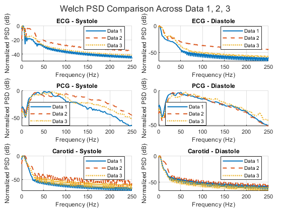
functions
function y = preprocess_signal(x, Fs, sigType) x = x(:); x = x - mean(x); switch lower(sigType) case 'ecg' % ECG morphology / baseline removal [b,a] = butter(4, [0.5 40]/(Fs/2), 'bandpass'); case 'pcg' % Main heart sound band [b,a] = butter(4, [20 200]/(Fs/2), 'bandpass'); case 'carotid' % Pulse waveform band [b,a] = butter(4, [0.5 20]/(Fs/2), 'bandpass'); otherwise error('Unknown signal type.'); end y = filtfilt(b, a, x); end function [out] = pan_tomp(ECG, Fs, plot_option, signal_name) N = length(ECG); t = linspace(0, N/Fs, N); % Low-pass Filter fn_low = 15; [B1, A1] = butter(3, fn_low*2/Fs, "low"); ecg_lp = filtfilt(B1, A1, ECG); %Highpass filter fn_high = 5; [B2, A2] = butter(3,fn_high*2/Fs, "high"); ecg_hp = filtfilt(B2, A2, ecg_lp); %Derivative filter: from (4.14) eq B3 = [2 1 0 -1 -2]/8; ecg_df = filtfilt(B3, 1, ecg_hp); %Squaring ecg_sq = ecg_df .^2; %Integration: from (4.15) eq windowSize = 150; % the book says that 30 is suitable for fs = 200. so I chose 150 for fs = 1000 B4 = (1/windowSize)*ones(1,windowSize); out = filtfilt(B4, 1, ecg_sq); %normalize final output out = out/max(out); %plot if plot_option == 1 figure('Name', ['Pan Tompkin step by step for ',signal_name]) subplot(321), plot(t, ECG), title('Main ECG') subplot(322), plot(t, ecg_lp), title('Low Passed') subplot(323), plot(t, ecg_hp), title('High Passed') subplot(324), plot(t, ecg_df), title('Deivated') subplot(325), plot(t, ecg_sq), title('Squared') , ylabel('time(s)') subplot(326), plot(t, out), title('Integrated(final result)') , ylabel('time(s)') end end function visualize_pan_tomp(ECG, Fs, out_pan_tomp, t, signal_name) % Threshold for R-peak detection threshold = 0.5; min_rr_samples = round(0.4 * Fs); % Minimum RR: 400ms (150 bpm max) {60 s/150 bpm} = 0.4s [~, R_locs] = findpeaks(out_pan_tomp, 'MinPeakHeight', threshold, ... 'MinPeakDistance', min_rr_samples); % Remove duplicate R-peaks R_locs = unique(R_locs); num_beats = length(R_locs); clc fprintf('Number of detected R-peaks: %d\n', num_beats); fprintf('Average Heart Rate: %.1f bpm\n', (num_beats / t(end)) * 60); % ---- Plot R-peak detection pipeline ---- figname = strcat("R-Peak Detection for " ,signal_name); figure('Name',figname); subplot(2,1,1); plot(t, ECG, 'Color',[0.2 0.4 0.8]); title(['filtered ECG + Detected R-peaks',signal_name],'FontSize',11,'FontWeight','bold'); ylabel('Amplitude'); grid on; hold on; plot(t(R_locs), ECG(R_locs), 'rv', 'MarkerFaceColor','r','MarkerSize',8); subplot(2,1,2); plot(t, out_pan_tomp, 'Color',[0.6 0.1 0.6],'LineWidth',1.2); hold on; yline(threshold, 'r--', 'LineWidth',1.5, 'Label','Threshold'); plot(t(R_locs), out_pan_tomp(R_locs), 'rv', 'MarkerFaceColor','r','MarkerSize',8); title('Moving Window Integration + Detected R-peaks','FontSize',11,'FontWeight','bold'); ylabel('Normalized'); xlabel('Time (s)'); grid on; for k = 1:2; subplot(2,1,k); xlim([t(1) t(end)]); end end function [sysMat, diaMat] = split_rr_segments(x, r_locs, sysFrac) x = x(:); nBeats = length(r_locs) - 1; sysCells = cell(nBeats,1); diaCells = cell(nBeats,1); lenSys = zeros(nBeats,1); lenDia = zeros(nBeats,1); c = 0; for k = 1:nBeats i1 = r_locs(k); i3 = r_locs(k+1); if i3 <= i1 continue; end Lrr = i3 - i1 + 1; i2 = i1 + round(sysFrac * Lrr); if i2 >= i3 || i2 <= i1 continue; end c = c + 1; sysCells{c} = x(i1:i2-1); diaCells{c} = x(i2:i3-1); lenSys(c) = length(sysCells{c}); lenDia(c) = length(diaCells{c}); end sysCells = sysCells(1:c); diaCells = diaCells(1:c); lenSys = lenSys(1:c); lenDia = lenDia(1:c); Lsys_med = round(median(lenSys)); Ldia_med = round(median(lenDia)); sysMat = zeros(c, Lsys_med); diaMat = zeros(c, Ldia_med); for k = 1:c sysMat(k,:) = resize_segment(sysCells{k}, Lsys_med); diaMat(k,:) = resize_segment(diaCells{k}, Ldia_med); end end function y = resize_segment(x, Lnew) x = x(:).'; Lold = length(x); if Lold == Lnew y = x; return; end xq = linspace(1, Lold, Lnew); y = interp1(1:Lold, x, xq, 'linear'); end function plot_compare_sets(sys1, dia1, sys2, dia2, sys3, dia3, sigName, Fs, nShow) figure('Color','w','Name',[sigName ' - Systole/Diastole Comparison']); tl = tiledlayout(3,2,'TileSpacing','compact','Padding','compact'); nexttile; plot_some_rows_ms(sys1, Fs, nShow); title(['Data 1 - ' sigName ' - Systole']); xlabel('Time (ms)'); ylabel('Amplitude'); grid on; nexttile; plot_some_rows_ms(dia1, Fs, nShow); title(['Data 1 - ' sigName ' - Diastole']); xlabel('Time (ms)'); ylabel('Amplitude'); grid on; nexttile; plot_some_rows_ms(sys2, Fs, nShow); title(['Data 2 - ' sigName ' - Systole']); xlabel('Time (ms)'); ylabel('Amplitude'); grid on; nexttile; plot_some_rows_ms(dia2, Fs, nShow); title(['Data 2 - ' sigName ' - Diastole']); xlabel('Time (ms)'); ylabel('Amplitude'); grid on; nexttile; plot_some_rows_ms(sys3, Fs, nShow); title(['Data 3 - ' sigName ' - Systole']); xlabel('Time (ms)'); ylabel('Amplitude'); grid on; nexttile; plot_some_rows_ms(dia3, Fs, nShow); title(['Data 3 - ' sigName ' - Diastole']); xlabel('Time (ms)'); ylabel('Amplitude'); grid on; title(tl, [sigName ' Segments Comparison Across Data 1, 2, 3']); end function plot_some_rows_ms(X, Fs, nShow) hold on; n = min(nShow, size(X,1)); L = size(X,2); t_ms = (0:L-1)/Fs*1000; plot(t_ms, X(1:n,:).', 'LineWidth', 1.0); end function plot_aic_figure(sys1, dia1, sys2, dia2, sys3, dia3, maxP, sigName) figure('Color','w','Name',['Mean AIC - ' sigName]); tl = tiledlayout(3,2,'TileSpacing','compact','Padding','compact'); nexttile; plot_mean_aic_curve(sys1, maxP, ['Data 1 - ' sigName ' - Systole']); nexttile; plot_mean_aic_curve(dia1, maxP, ['Data 1 - ' sigName ' - Diastole']); nexttile; plot_mean_aic_curve(sys2, maxP, ['Data 2 - ' sigName ' - Systole']); nexttile; plot_mean_aic_curve(dia2, maxP, ['Data 2 - ' sigName ' - Diastole']); nexttile; plot_mean_aic_curve(sys3, maxP, ['Data 3 - ' sigName ' - Systole']); nexttile; plot_mean_aic_curve(dia3, maxP, ['Data 3 - ' sigName ' - Diastole']); title(tl, ['Mean AIC vs AR Order - ' sigName]); end function [meanAIC, bestP] = plot_mean_aic_curve(X, maxP, ttl) nWin = size(X,1); AICall = nan(nWin, maxP); for k = 1:nWin x = detrend(X(k,:).'); N = length(x); for p = 1:maxP if N <= p+1 continue; end try [~, E] = aryule(x, p); AICall(k,p) = N * log(E) + 2*p; catch AICall(k,p) = NaN; end end end meanAIC = mean(AICall, 1, 'omitnan'); [~, bestP] = min(meanAIC); plot(1:maxP, meanAIC, '-o', 'LineWidth', 1.2, 'MarkerSize', 4); hold on; plot(bestP, meanAIC(bestP), 'rp', 'MarkerFaceColor', 'r', 'MarkerSize', 10); grid on; xlabel('AR Order'); ylabel('Mean AIC'); title(ttl); end function plot_mean_ar_psd_figure(sys1, dia1, sys2, dia2, sys3, dia3, Fs, maxP, nFFT, sigName) figure('Color','w','Name',['Mean PSD Comparison - ' sigName]); tl = tiledlayout(3,2,'TileSpacing','compact','Padding','compact'); nexttile; plot_mean_psd_compare(sys1, Fs, maxP, nFFT, ['Data 1 - ' sigName ' - Systole']); nexttile; plot_mean_psd_compare(dia1, Fs, maxP, nFFT, ['Data 1 - ' sigName ' - Diastole']); nexttile; plot_mean_psd_compare(sys2, Fs, maxP, nFFT, ['Data 2 - ' sigName ' - Systole']); nexttile; plot_mean_psd_compare(dia2, Fs, maxP, nFFT, ['Data 2 - ' sigName ' - Diastole']); nexttile; plot_mean_psd_compare(sys3, Fs, maxP, nFFT, ['Data 3 - ' sigName ' - Systole']); nexttile; plot_mean_psd_compare(dia3, Fs, maxP, nFFT, ['Data 3 - ' sigName ' - Diastole']); title(tl, ['Mean PSD Comparison (AR optimal, AR order 5, Welch) - ' sigName]); end function plot_mean_psd_compare(X, Fs, maxP, nFFT, ttl) nWin = size(X,1); AICall = nan(nWin, maxP); % ---------- Find optimal order from mean AIC ---------- for k = 1:nWin x = detrend(X(k,:).'); N = length(x); for p = 1:maxP if N <= p+1 continue; end try [~, E] = aryule(x, p); AICall(k,p) = N * log(E) + 2*p; catch AICall(k,p) = NaN; end end end meanAIC = mean(AICall, 1, 'omitnan'); [~, bestP] = min(meanAIC); % ---------- Mean AR PSD with optimal order ---------- P_ar_opt_all = nan(nWin, nFFT/2+1); % ---------- Mean AR PSD with fixed order = 5 ---------- P_ar_5_all = nan(nWin, nFFT/2+1); % ---------- Mean Welch PSD ---------- P_welch_all = nan(nWin, nFFT/2+1); for k = 1:nWin x = detrend(X(k,:).'); try [Popt, f] = pyulear(x, bestP, nFFT, Fs); P_ar_opt_all(k,:) = 10*log10(Popt(:)' / max(Popt)); catch end try [P5, ~] = pyulear(x, 5, nFFT, Fs); P_ar_5_all(k,:) = 10*log10(P5(:)' / max(P5)); catch end try winLen = min(256, length(x)); nover = round(0.5 * winLen); [Pw, fw] = pwelch(x, hamming(winLen), nover, nFFT, Fs); P_welch_all(k,:) = 10*log10(Pw(:)' / max(Pw)); catch end end Pm_opt = mean(P_ar_opt_all, 1, 'omitnan'); Pm_5 = mean(P_ar_5_all, 1, 'omitnan'); Pm_w = mean(P_welch_all, 1, 'omitnan'); hold on; plot(f, Pm_opt, 'b', 'LineWidth', 1.5); plot(f, Pm_5, 'k--','LineWidth', 1.3); plot(fw, Pm_w, 'r','LineWidth', 1.5); grid on; xlabel('Frequency (Hz)'); ylabel('Normalized PSD (dB)'); title(sprintf('%s | p_{opt} = %d', ttl, bestP)); xlim([0 250]); legend('AR optimal','AR order 5','Welch','Location','best'); end function plot_ar5_dataset_comparison( ... ECG_sys_1, ECG_dia_1, ECG_sys_2, ECG_dia_2, ECG_sys_3, ECG_dia_3, ... PCG_sys_1, PCG_dia_1, PCG_sys_2, PCG_dia_2, PCG_sys_3, PCG_dia_3, ... CAR_sys_1, CAR_dia_1, CAR_sys_2, CAR_dia_2, CAR_sys_3, CAR_dia_3, ... Fs, nFFT) figure('Color','w','Name','AR(5) Dataset Comparison'); tl = tiledlayout(3,2,'TileSpacing','compact','Padding','compact'); % Row 1: ECG nexttile; plot_three_dataset_ar5(ECG_sys_1, ECG_sys_2, ECG_sys_3, Fs, nFFT, 'ECG - Systole'); nexttile; plot_three_dataset_ar5(ECG_dia_1, ECG_dia_2, ECG_dia_3, Fs, nFFT, 'ECG - Diastole'); % Row 2: PCG nexttile; plot_three_dataset_ar5(PCG_sys_1, PCG_sys_2, PCG_sys_3, Fs, nFFT, 'PCG - Systole'); nexttile; plot_three_dataset_ar5(PCG_dia_1, PCG_dia_2, PCG_dia_3, Fs, nFFT, 'PCG - Diastole'); % Row 3: Carotid nexttile; plot_three_dataset_ar5(CAR_sys_1, CAR_sys_2, CAR_sys_3, Fs, nFFT, 'Carotid - Systole'); nexttile; plot_three_dataset_ar5(CAR_dia_1, CAR_dia_2, CAR_dia_3, Fs, nFFT, 'Carotid - Diastole'); title(tl, 'Mean AR(5) Spectra Comparison Across Data 1, 2, 3'); end function plot_three_dataset_ar5(X1, X2, X3, Fs, nFFT, ttl) [P1, f] = mean_ar5_psd(X1, Fs, nFFT); [P2, ~] = mean_ar5_psd(X2, Fs, nFFT); [P3, ~] = mean_ar5_psd(X3, Fs, nFFT); hold on; plot(f, P1, 'LineWidth', 1.5); plot(f, P2, '--', 'LineWidth', 1.5); plot(f, P3, ':', 'LineWidth', 1.8); grid on; xlabel('Frequency (Hz)'); ylabel('Normalized PSD (dB)'); title(ttl); xlim([0 250]); legend('Data 1','Data 2','Data 3','Location','best'); end function [Pm, f] = mean_ar5_psd(X, Fs, nFFT) nWin = size(X,1); P_all = nan(nWin, nFFT/2+1); for k = 1:nWin x = detrend(X(k,:).'); try [Pxx, f] = pyulear(x, 5, nFFT, Fs); P_all(k,:) = 10*log10(Pxx(:)' / max(Pxx)); catch end end Pm = mean(P_all, 1, 'omitnan'); end function plot_welch_dataset_comparison( ... ECG_sys_1, ECG_sys_2, ECG_sys_3, ECG_dia_1, ECG_dia_2, ECG_dia_3, ... PCG_sys_1, PCG_sys_2, PCG_sys_3, PCG_dia_1, PCG_dia_2, PCG_dia_3, ... CAR_sys_1, CAR_sys_2, CAR_sys_3, CAR_dia_1, CAR_dia_2, CAR_dia_3, ... Fs) figure('Color','w','Name','Welch Dataset Comparison'); tl = tiledlayout(3,2,'TileSpacing','compact','Padding','compact'); % ECG nexttile; plot_three_sets_welch(ECG_sys_1, ECG_sys_2, ECG_sys_3, Fs); title('ECG - Systole'); xlabel('Frequency (Hz)'); ylabel('Normalized PSD (dB)'); grid on; nexttile; plot_three_sets_welch(ECG_dia_1, ECG_dia_2, ECG_dia_3, Fs); title('ECG - Diastole'); xlabel('Frequency (Hz)'); ylabel('Normalized PSD (dB)'); grid on; % PCG nexttile; plot_three_sets_welch(PCG_sys_1, PCG_sys_2, PCG_sys_3, Fs); title('PCG - Systole'); xlabel('Frequency (Hz)'); ylabel('Normalized PSD (dB)'); grid on; nexttile; plot_three_sets_welch(PCG_dia_1, PCG_dia_2, PCG_dia_3, Fs); title('PCG - Diastole'); xlabel('Frequency (Hz)'); ylabel('Normalized PSD (dB)'); grid on; % Carotid nexttile; plot_three_sets_welch(CAR_sys_1, CAR_sys_2, CAR_sys_3, Fs); title('Carotid - Systole'); xlabel('Frequency (Hz)'); ylabel('Normalized PSD (dB)'); grid on; nexttile; plot_three_sets_welch(CAR_dia_1, CAR_dia_2, CAR_dia_3, Fs); title('Carotid - Diastole'); xlabel('Frequency (Hz)'); ylabel('Normalized PSD (dB)'); grid on; title(tl, 'Welch PSD Comparison Across Data 1, 2, 3'); end function plot_three_sets_welch(X1, X2, X3, Fs) [P1, f] = mean_welch_psd(X1, Fs); [P2, ~] = mean_welch_psd(X2, Fs); [P3, ~] = mean_welch_psd(X3, Fs); hold on; plot(f, P1, 'LineWidth', 1.5); plot(f, P2, '--', 'LineWidth', 1.5); plot(f, P3, ':', 'LineWidth', 1.8); xlim([0 250]); legend('Data 1','Data 2','Data 3','Location','best'); end function [Pm, f] = mean_welch_psd(X, Fs) nWin = size(X,1); P_all = []; for k = 1:nWin x = detrend(X(k,:).'); if isempty(x) continue; end winLen = min(256, length(x)); if winLen < 8 continue; end nover = round(0.5 * winLen); [Pxx, f] = pwelch(x, hamming(winLen), nover, 1024, Fs); P_all(k,:) = 10*log10(Pxx(:)' / max(Pxx)); end Pm = mean(P_all, 1, 'omitnan'); end